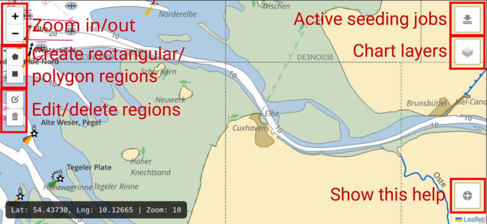
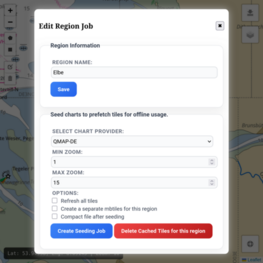
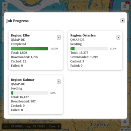

The graphical interface provides several tools for navigating the chart, defining cache regions, and managing chart data. The buttons highlighted in the interface correspond to the main controls available to the user.

The Zoom In (+) and Zoom Out (−) buttons allow the user to change the map scale.
Zoom In (+)
Increases the zoom level to
display more detailed chart information.
Zoom Out (−)
Decreases the zoom level to
show a larger geographic area.
These controls behave similarly to standard map applications. Zooming can also be performed using the mouse scroll wheel.
The region creation tools allow the user to define areas of the map for chart caching.
Create Rectangular Region
Enables the user
to draw a rectangular area on the chart. This region defines the
boundaries where chart data should be cached.
Create Polygon Region
Allows the user to
draw a custom polygon by placing multiple points on the map. This
is useful when the area of interest does not fit a simple
rectangle.
These regions determine which chart tiles or map data will be included in the cache.
Once regions are created, they can be modified using the editing tools.
Edit Region
Allows the user to modify an
existing region by adjusting its shape or vertices.
Delete Region
Removes the selected region
from the map.
The Active Seeding Jobs button displays currently running caching or seeding processes.
From this panel, users can monitor the progress of jobs that are downloading or preparing chart data for offline use.
The Chart Layers button opens a layer selection menu.
Users can enable or disable different chart layers to control what information is visible on the map. Only chart layers that support proxy will be visible in this menu.
The Help button opens the help overlay shown in the interface.
This overlay provides a quick visual guide explaining the available controls and their functions.
The Edit Region Job dialog allows users to configure caching (seeding) settings for a selected region. Seeding downloads chart tiles for the defined region so they are available locally for offline use.

Region Name field defines the name of the selected
region. This name is used to identify the region in the interface and
in the list of configured jobs.
Save: button stores any changes made to the region name.
This section configures how chart tiles will be downloaded and stored for the selected region.
Select Chart Provider: dropdown allows the user to choose
which chart source should be used when downloading tiles. Different
providers may supply different chart styles or datasets depending on
the configured system.
Minimum Zoom: value defines the lowest zoom level that
will be downloaded. Lower zoom levels cover larger geographic areas
with fewer tiles and are useful for viewing charts while zoomed far
out.
Maximum Zoom: value defines the highest zoom level that
will be downloaded. Higher zoom levels contain more detailed chart
data but require significantly more tiles and storage space.
Refresh All Tiles If enabled, the seeding process will
re-download tiles even if they already exist in the cache. This is
useful when charts have been updated and the local cache needs to be
refreshed.
Create a Separate MBTiles for This Region: When enabled,
all tiles downloaded for this region will be copied to a dedicated
MBTiles database file. First the tiles will be downloaded to the
global cache, once the download is complete a new mbtiles file will be
created to include the downloaded tiles.
This can be useful for:
Compact File After Seeding If this option is enabled, the
MBTiles database will be compacted after the seeding process finishes.
Compaction reduces file size and improves storage efficiency by
cleaning up unused database space created during the tile download
process.
⚠️ Warning: This will temporarily create a new mbtiles file and copy the tiles to the new database. You must have enough diskspace to perform this operation.
Create Seeding Job button starts a caching job for the
selected region using the configured settings. The job will download
all tiles required for the region between the selected minimum and
maximum zoom levels. Progress and status information can be monitored
in the Job Progress panel.
Delete Cached Tiles for This Region: button removes all
cached tiles associated with the selected region. This operation frees
storage space from the mbtiles but not necesarily the diskspace.
⚠️ Warning: This action permanently deletes the cached data for the region.
⚠️ Warning: Eventhough the tiles are removed from the cache, the database size on disk will not shrink due to how sqlite database are managed. Use compact file after seeding option to free the diskspace.
The Job Progress dialog displays the status of active chart seeding
jobs.
Each job represents a task that downloads chart tiles for a
defined region so they are available for offline use. Jobs are
ephemeral: If the signalk server is restarted these jobs will also be
removed, but the cached tiles will remain in the cache.

Each job card provides a summary of the seeding operation.
Region: field shows the name of the region associated
with the job.
This corresponds to the region defined during the
region creation or editing process. The line below the region name
indicates the chart provider being used to download tiles.
Job Status: indicates the current activity of the job.
Possible statuses are: Seeding – Tiles are currently
being downloaded. and - Completed – The job has
finished successfully.
Progress Bar: visually represents how much of the job has
been completed. The percentage shown next to the bar indicates the
proportion of tiles processed relative to the total number of tiles
required for the region and zoom levels.
Each job displays several counters that provide detailed information about the seeding process.
Total: Indicates an estimate of the total number of tiles
that must be processed for the job with up to %10 error depending on
the size and shape of the region.
Downloaded: Represents the number of tiles successfully
retrieved from the chart provider during the current seeding process.
Cached: Indicates the number of tiles that were already
present in the cache and did not need to be downloaded again. This can
occur when seeding overlaps with previously cached data.
Failed: Represents the number of tiles that could not be
downloaded due to network errors, provider issues, or other failures.
Cancel Job: Each job card contains a
Cancel (×) button in the upper corner. Pressing this
button stops the seeding process for that job. Any tiles that were
already downloaded will remain in the cache.